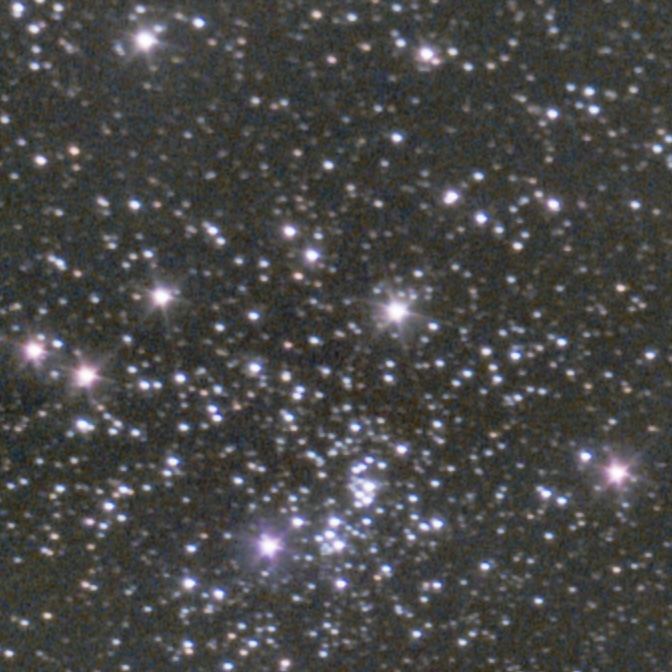
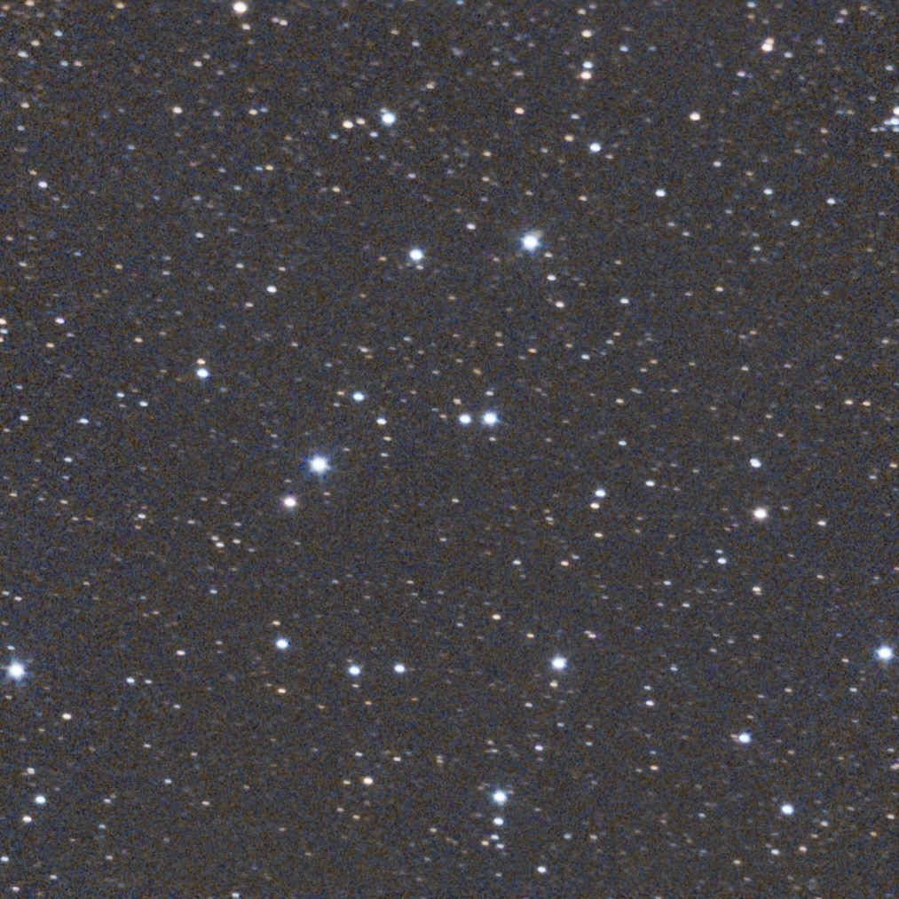
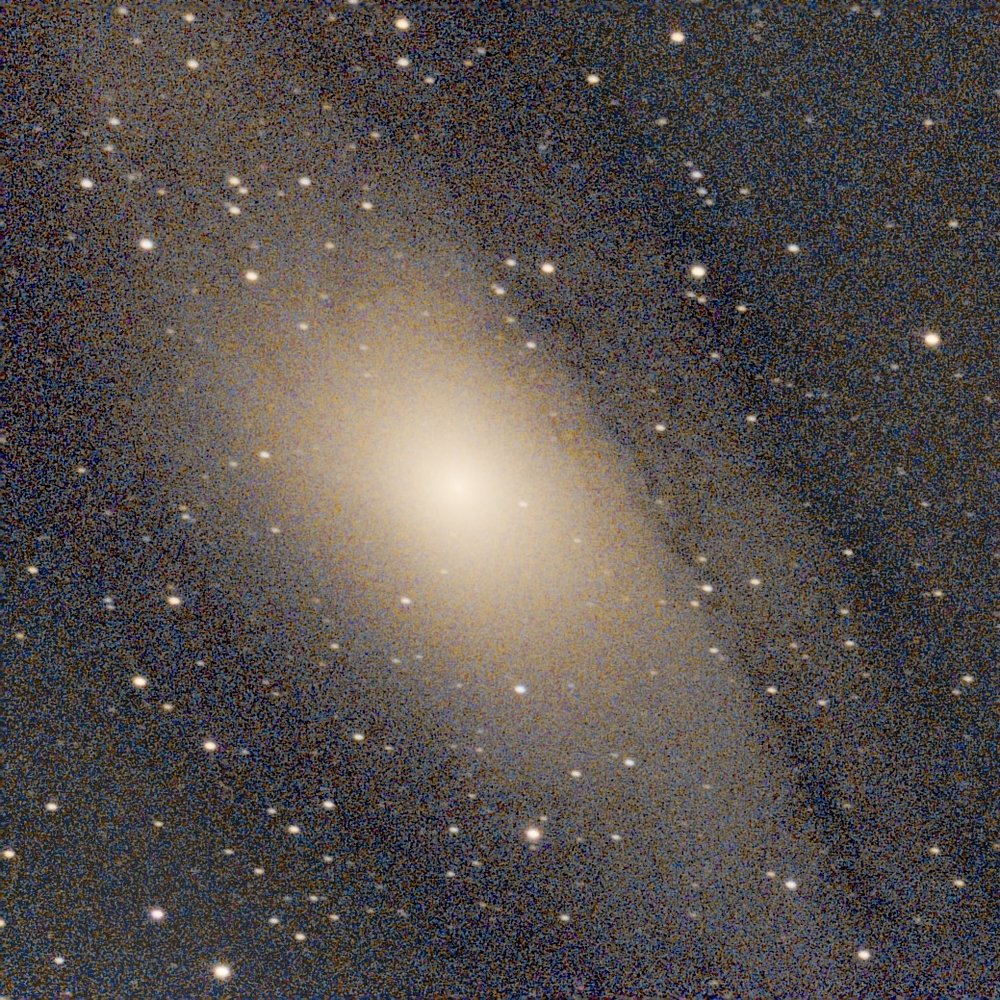
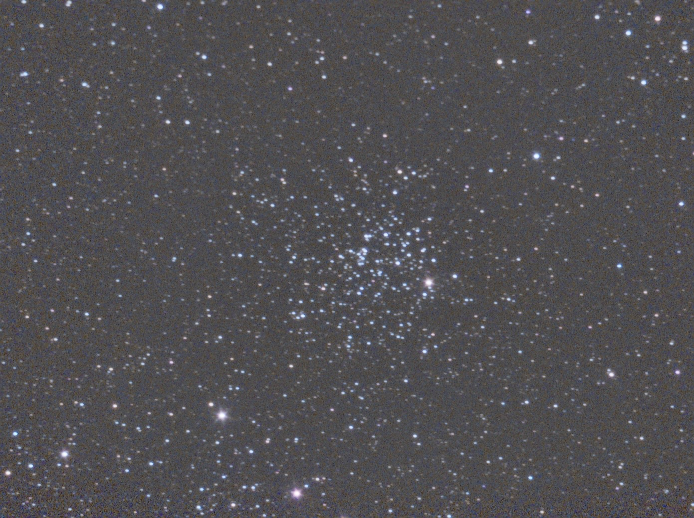

Quelques photos prises avec une caméra Atik 414EX Color sur un télescope 150/750 :




Quelques photos prises avec un iPhone 16e sur un télescope Newton 150/750 :


Une photo prise dans les Alpes avec un iPhone 12 sur un télescope Dobson :